01
LAKAW: Smart Travel Planner
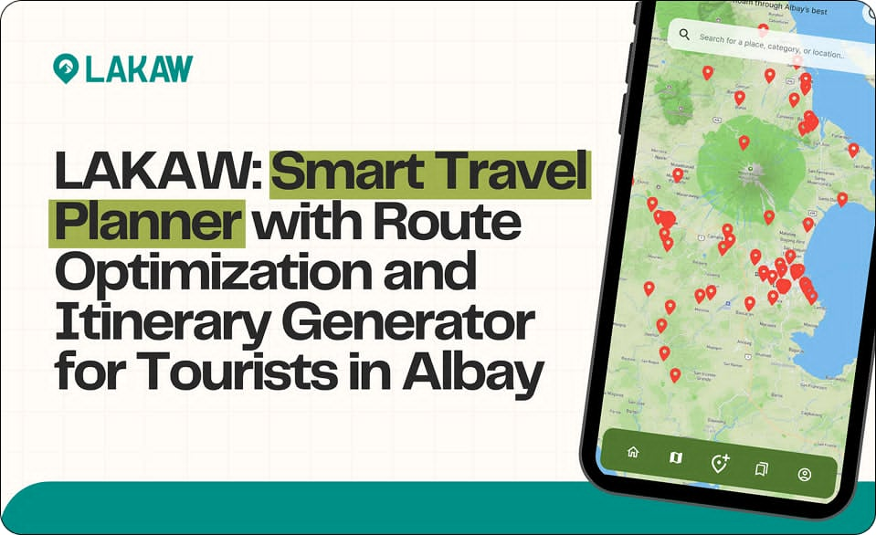
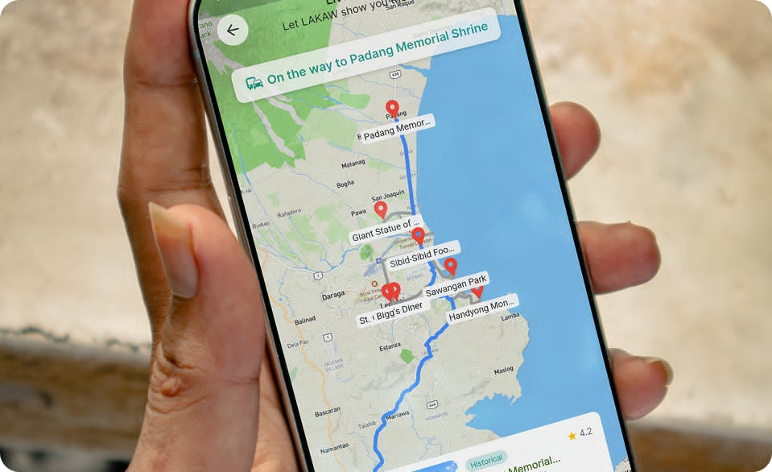
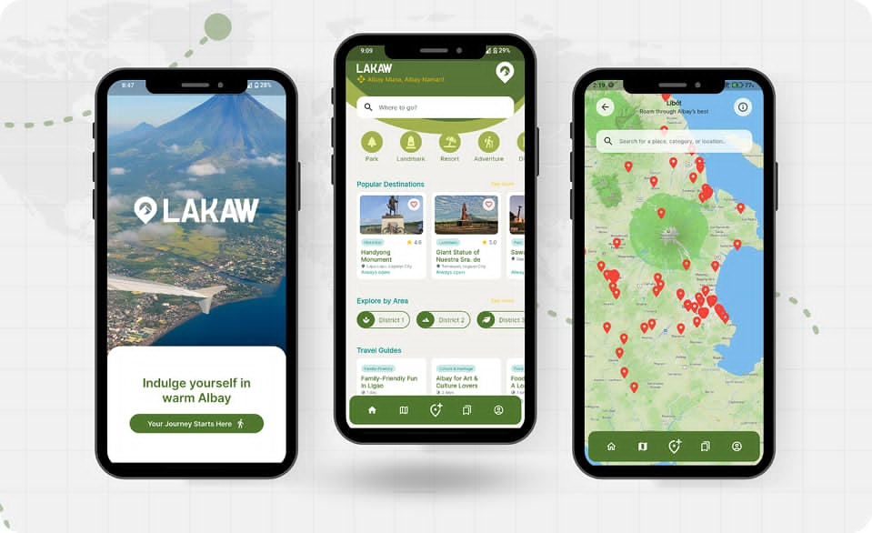
Route optimization system that generates intelligent travel itineraries using A*, Floyd-Warshall, and Genetic Algorithms. Contributed as backend developer responsible for algorithm integration and API layer.
02
Human Resource Information System
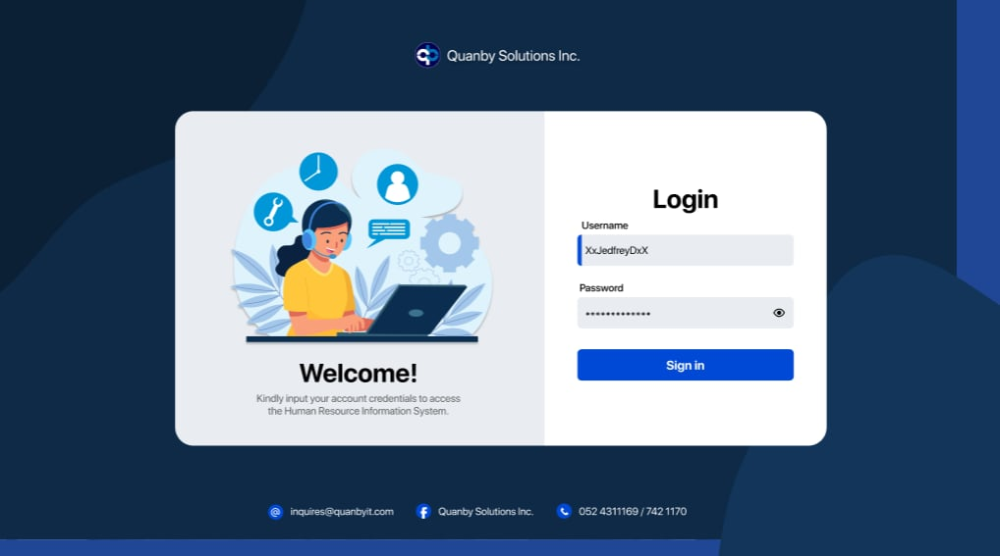
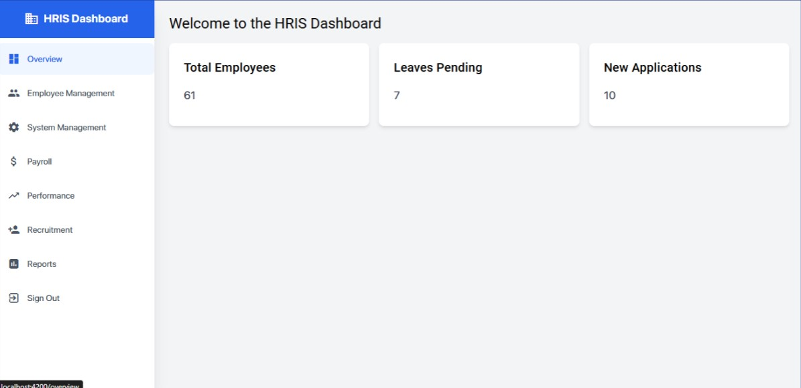
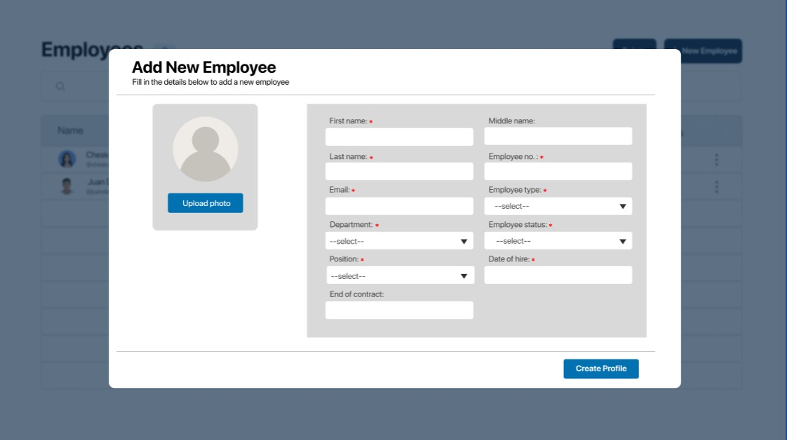
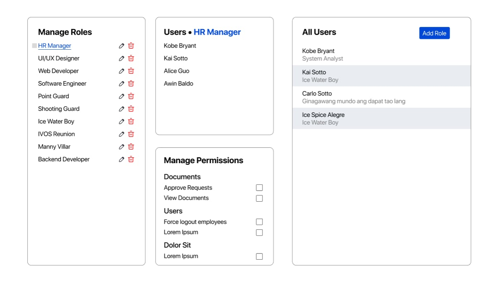
Led backend development of an HRIS during internship at Quanby Solutions Inc. Designed and implemented REST APIs, authentication systems, and database integration to support employee data management workflows.
03
Ingredient Detection Recipe App
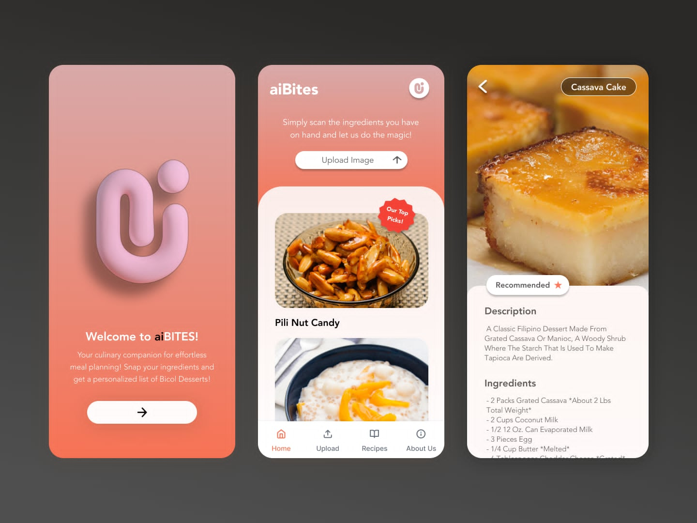
Android application that uses image processing and machine learning to identify ingredients from photos and suggest matching recipes. Combines computer vision with a practical everyday use case.
04
Climate Vulnerability Index
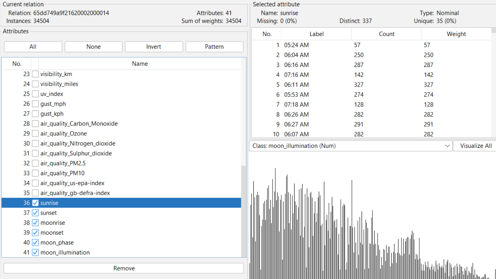
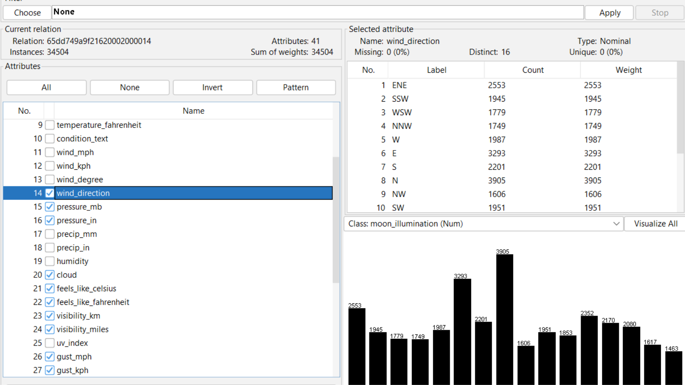
Data mining project applying K-Means clustering on weather datasets to identify and visualize regional climate vulnerability patterns. Built for research and policy analysis use cases.
05
Child Labor Case Monitoring System
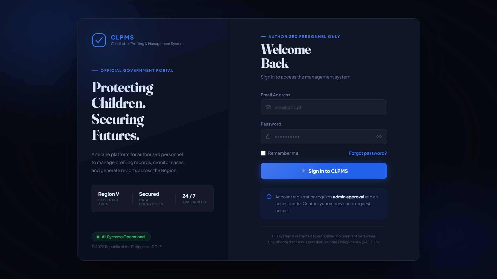
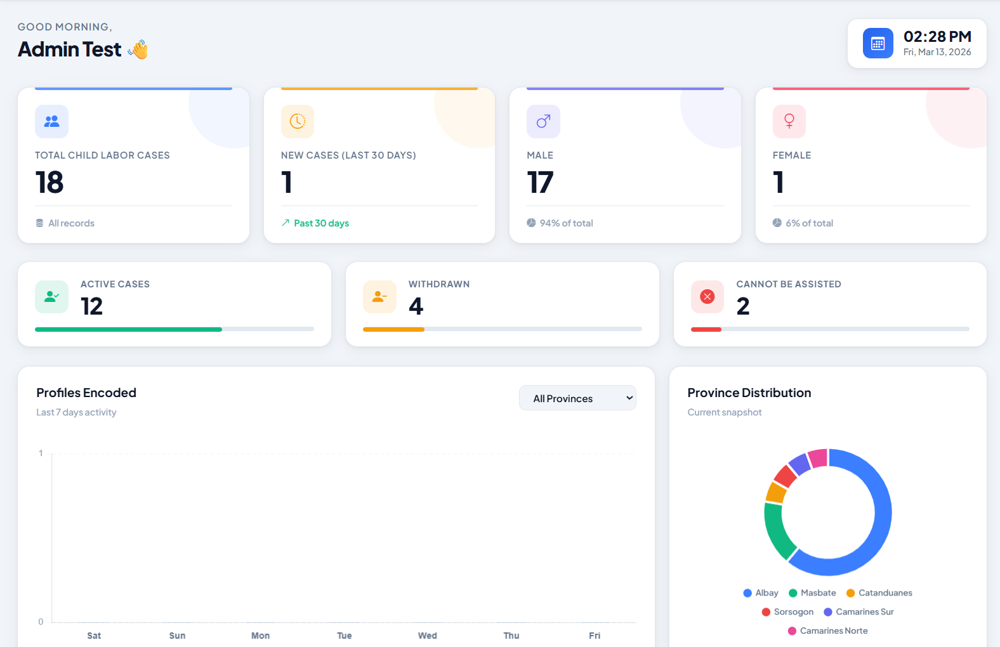
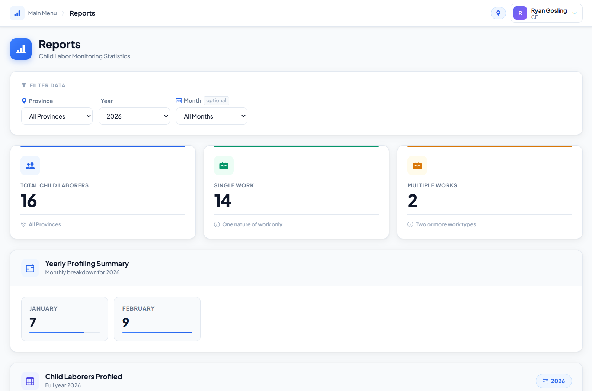
Full-stack web system for DOLE's Child Labor Prevention and Elimination Program. Handles case profiling, monitoring dashboards, and secure role-based access control across multiple user types.